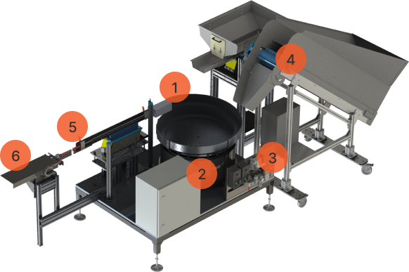

Sistem pengumpan otomatis yang menyortir, mengorientasikan, dan memasok part ke stasiun kerja perakitan dengan kecepatan hingga 600 part/menit tanpa risiko tersangkut (*zero jamming*).

Dibuat dengan toleransi sub-milimeter untuk kestabilan siklus produksi 24/7.
Wadah spiral bertingkat berdiameter 150 - 900 mm dengan jalur lintasan yang dibubut CNC sesuai geometri part, dilapisi poliuretan anti-aus untuk meredam gesekan (Stainless Steel SUS304/316L).
Kumparan elektromagnetik dan pegas daun (*leaf springs*) presisi yang menghasilkan osilasi mikro frekuensi tinggi untuk menggerakkan part secara seragam.
Pengatur getaran digital dengan fitur stabilisasi voltase otomatis, soft-start, dan interlock sensor fiber optik untuk komunikasi langsung ke PLC lini pabrik.
Hopper penampung part berkapasitas 5L - 50L dengan sensor ketinggian fotolistrik yang mengisi mangkuk getar secara otomatis agar beban mangkuk selalu konstan.
Jalur transfer linier bertenaga getar horizontal yang menyalurkan komponen dari output mangkuk ke stasiun perakitan dalam antrean part yang rapi dan terarah.
Mekanisme pemisah part pneumatik di ujung track linier untuk menahan dan memposisikan satu per satu part agar siap diambil oleh gripper robot perakitan.
Parameter teknis dimensi, kecepatan feeding, dan daya listrik.
| Model Seri | Diameter Mangkuk | Dimensi Part Ideal | Kecepatan Output | Tegangan Daya |
|---|---|---|---|---|
| ST-BF150 | Ø 150 mm | Komponen Mikro (1 - 5 mm) | Hingga 600 PPM | 220V AC / 50 Hz |
| ST-BF300 | Ø 300 mm | Baut, Mur, Pin (5 - 25 mm) | Hingga 450 PPM | 220V AC / 50 Hz |
| ST-BF500 | Ø 500 mm | Part Otomotif, Tutup Botol (25 - 60 mm) | Hingga 300 PPM | 220V AC / 50 Hz |
| ST-BF800 | Ø 800 mm | Stamping Berat, Pipa, Flens (> 60 mm) | Hingga 180 PPM | 220V AC / 50 Hz |